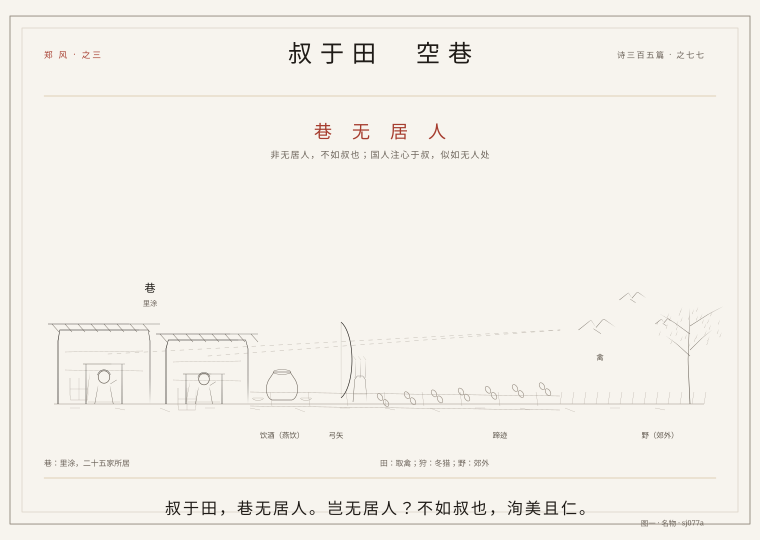
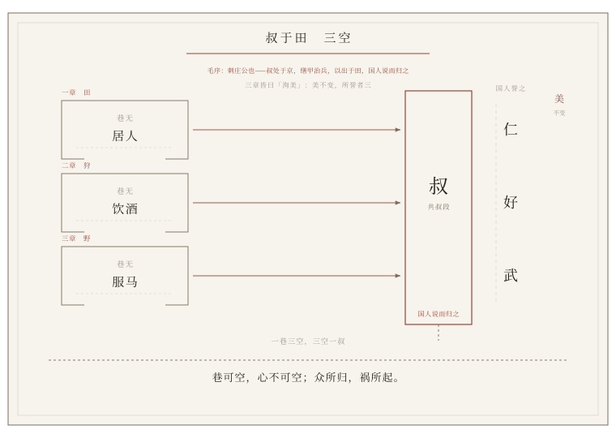

第七十七篇 叔于田
郑风 · 之三 SJ077
朗读 · 普通话
依经文原文朗读，章次不读出；配古琴底乐，不改速、不加拖腔。全库同一音色（豆包 TTS），非播音员录制。
一 解题
诗三判：
- 谁在说：不是叔段自己，也不是庄公，是“国人”——住在国都、走在同一条巷里的人。毛序说“国人说而归之”，说得明白：这是一首由旁人唱出来的赞歌。唱的人越多，越要问一句：他们唱的是叔，还是自己心里的那个“叔”？
- 说什么事：叔去打猎，巷里就像没有人了。下一句自己纠正：岂无居人？有，只是“不如叔”。三章换三样东西——居人、饮酒、服马——说的却是同一件事：一个人出门，一条巷子空了。
- 为何编在此：郑风之三。前一篇《将仲子》写“畏”，这一篇写“归”。畏是怕人言，归是众人把心交出去。下一篇《大叔于田》把同一场猎事铺长，再下一篇《清人》写众散。得众—恃众—失众，郑风开头这几篇，已经把一个权臣的起落摆出来了。
《毛序》：“《叔于田》，刺庄公也。叔处于京，缮甲治兵，以出于田，国人说而归之。”
郑笺：“缮之言善也。甲，铠也。”
毛传：“叔，大叔段也。田，取禽也。巷，里涂也。”
郑笺：“叔往田，国人注心于叔，似如无人处。”
毛传：“冬猎曰狩。”
郑笺：“饮酒谓燕饮也。”“适，之也。郊外曰野。服马犹乘马也。”“武有武节。”
朱子《诗集传》：“赋也。叔，庄公弟共叔段也。事见春秋。田，取禽也。巷，里涂也。洵，信。美，好也。仁，爱人也。○段不义而得众。国人爱之。故作此诗。言叔出而田、则所居之巷、若无居人矣。非实无居人也。虽有而不如叔之美且仁。是以若无人耳。或疑、此亦民闲男女相悦之词也。”
《诗本音》：“叔于田，巷无居人。岂无居人？不如叔也，洵美且仁。”三章章五句。
本库的看法：《叔于田》是一首把“得众”写成“空巷”的诗。
它没有说叔段仁、好、武，它说的是“国人说他仁、好、武”。“巷无居人”不是巷子真空了，是看的人心里只剩一个叔。
一个人被众人看到“巷空”的地步，是荣耀，也是危险；毛序把这首诗系在“刺庄公”，刺的正是那只看不见的手：弟在京缮甲治兵，兄在朝不加制止，国人先替他把名声抬起来了。
先辨六事：“叔”是共叔段，不是叔叔；“田”是取禽、打猎，不是田地；“巷”是里涂，不是今日的小巷；“狩”是冬猎；“野”是郊外；“服马”是乘马、驾驭，不是服侍马，也不是马衣。
二 经文
第一章
叔于田，巷无居人。岂无居人？不如叔也，洵美且仁。
第二章
叔于狩，巷无饮酒。岂无饮酒？不如叔也，洵美且好。
第三章
叔适野，巷无服马。岂无服马？不如叔也，洵美且武。
分章：三章，章五句，共十五句。
三 韵读
- 一章：田（叶地因反）、人、仁。田、人、仁三字一韵；朱子以“田”叶“地因反”，与“人”“仁”同收真部。
- 二章：狩（叶始九反）、酒、好（叶许厚反）。三字皆上声；顾炎武说此章“以上去通为一韵”，朱子以“狩”叶“始九反”、“好”叶“许厚反”，正取上声相从。
- 三章：野（叶上与反）、马（叶满补反）、武。三字皆鱼部上声；野、马、武一韵到底。
读法：三章换的是“田—狩—野”“居人—饮酒—服马”“仁—好—武”，不换的是“巷无”“不如叔”“洵美”。凡是三章都不换的字，就是诗的骨架。
骨架只有三根：一根叫“空”，一根叫“不如”，一根叫“美”。三章把这三根骨架反复敲，敲出一条巷子的回声。
四 字义与名物
叔：共叔段。郑庄公的同母弟，名段，字叔。毛传作“大叔段”，“大”读泰；诗题只称“叔”，下一篇才称“大叔”。不是“叔叔”，不是“叔父”，更不是泛称的“老三”。
共是国名，段出奔共，故称共叔段；共不是“共同”的共。
于：往、之。不是“在”。“叔于田”是叔往田，不是叔在田里。
田：取禽、打猎。毛传“田，取禽也”，朱子同。不是田地。
先秦田猎兼讲武事，《左传·隐公五年》说“春蒐、夏苗、秋狝、冬狩，皆于农隙以讲事也”；所以“叔于田”不只是游玩，也是把人马甲兵拉出去给人看。
巷：里涂，里内的道路。毛传“巷，里涂也”，朱子同。里的规模，毛传《将仲子》说“二十五家为里”。巷不是今日的“小巷子”，是二十五家共用的一条里涂。
居人：住在里巷中的人。不是“坐着的人”，也不是“居民”这么现代的户口概念。
岂：难道、岂不。反诘之辞。“岂无居人”不是否认有居人，是把“无”字翻过来给你看。
不如：比不上。不是“不服从”，不是“不如意”。
洵：信、确实。郑笺“洵，信也”。“洵美”是确实美，不是“洵美”这个地名。
美：美好。朱子“美，好也”。此处偏于“美好、令人喜欢”，不是“美女”。三章“美”字不动，是诗里唯一的常量。
仁：仁爱。毛传“仁，爱人也”，朱子同。但孔疏说得很重：“仁是行之美名，叔乃作乱之贼，谓之信美好而又仁者，言国人悦之辞，非实仁也。”“仁”是国人的口碑，不是史官的定评。
这一句，是读全篇的钥匙。
狩：冬猎。毛传“冬猎曰狩”，朱子同。不是一切打猎的泛称。
饮酒：燕饮、宴饮。郑笺“饮酒谓燕饮也”。不是单说“喝酒”；燕饮有席、有主宾、有礼数，所以“巷无饮酒”说的是“没有一场够得上叔的席”。
好：美好、和好。毛传“好，美好”，朱子“好”。与上章“仁”对看，“仁”偏于心，“好”偏于外：一个是爱人，一个是让人喜欢。
适：往、之。郑笺“适，之也”，朱子同。不是“适合”。
野：郊外。郑笺“郊外曰野”，朱子同。不是荒野；郊外是城与野的交界，正是出猎之地。
服马：乘马、驾驭。郑笺“服马犹乘马也”，朱子“服，乘也”。孔疏说得清楚：上两章说“无居人”“无饮酒”都是说人，这一章不应独说“无马”，所以“服马”是“乘马之人”。不是服侍马，不是马衣，也不是夹辕的服马。
武：武勇、武节。郑笺“武有武节”。“武节”不是好勇斗狠，是勇而有节。
但“节”是国人给他的，不是史官验过的。
名物总辨：田（取禽）—狩（冬猎）—野（郊外），是同一场出猎的三个说法；居人（巷中之人）—饮酒（燕饮之席）—服马（乘马之人），是同一座巷子的三面空；仁（爱人之名）—好（可悦之名）—武（武节之名），是国人口里的三顶帽子。三样东西都往叔身上归，巷子就空了。
五 今译
叔去打猎，巷里好像没有住户了。难道真没有住户？只是没人比得上叔，他确实美好又仁爱。
叔去冬猎，巷里好像没有宴饮的人了。难道真没有宴饮的人？只是没人比得上叔，他确实美好又和好。
叔到郊外去，巷里好像没有骑马的人了。难道真没有骑马的人？只是没人比得上叔，他确实美好又勇武。
六 章旨
一章“田”：最泛的说法，取禽于田。所空是“居人”，所誉是“仁”。整条巷子的人都去看叔，家里就空了。
二章“狩”：冬猎，事更专，人更盛。所空是“饮酒”，所誉是“好”。连席上都没人了，不是没有酒，是没有一场席比叔更值得去。
三章“野”：出城，到郊外。所空是“服马”，所誉是“武”。连驾马的人都跟去了，不是没有马，是没有一个人能在叔的马前站住。
三章不是三次出门，是同一场出猎的三个观察点：人、酒、马。
巷子没有真空，是看的人心里空了；叔没有真仁，是国人的嘴把他抬到“仁”上。诗面全是誉，诗骨全是“刺”；誉得越高，刺得越深。
一篇之要，在“岂无”二字。
没有这两个字，诗就是瞎捧；有了这两个字，诗就有了两层：第一层是“无”，第二层是“有而不如”。诗人不拆穿叔，他只把“不如”两个字摆在你面前，让你自己去量。
七 诗教
兴：此诗是“赋”，直陈其事。它的“兴”不在草木，在句法：先立一个极端的“无”，再用“岂无”把它翻过来，最后用“不如”把真话落地。三章同一个句式，像三次回声；回声越大，巷子越空。
观：观“得众”。一个人出门，一条巷子空；这不是他的德，是众人的心。众心可以归，也可以散；可以成人，也可以杀人。
毛序把这件事系在“刺庄公”，不是说叔段不该得众，是说庄公不该让弟得众到“巷空”还不制止。得众是果，不制是因。
群：巷是共同体最小的单位。二十五家共一条里涂，共一口井，共一个名字。现在这条巷把所有人都送到一个人身上，共同体就失了平衡。诗可以群，不是大家唱同一个人，是大家还要回到同一条巷里。
怨：此诗有刺，刺在诗外。诗面没有一句骂叔，也没有一句骂庄公；它只把“国人说而归之”摆出来。“主文而谲谏”，誉是文，刺是谲。
读到最后，最冷的一句不是“不如叔”，是“岂无”——有，只是不如；这一句比“无”更伤人。
诗教一句：誉之所归，祸之所起；爱之适以害之。
《叔于田》教人看的不是“叔多好”，是“众人为什么把他抬到巷空”。
八 分寸与边界
- 不可把“叔”读成“叔叔”“叔父”。此叔是共叔段，郑庄公的同母弟，名段，字叔；不是辈分。
- 不可把“田”读成“田地”。田是取禽、打猎；不是种田，也不是田亩。
- 不可把“巷无居人”读成“巷子里真没人”。下一句“岂无居人”自己就翻了；是“有，但不如叔”，不是空巷。
- 不可把“饮酒”读成“单纯喝酒”。郑笺说“饮酒谓燕饮也”，是有席有礼的宴饮；不是一个人闷头喝酒。
- 不可把“服马”读成“服侍马”或“马衣”。郑笺“服马犹乘马也”，朱子“服，乘也”；这里说的是乘马、驾驭的人。
- 不可把“仁”当成叔段的定评。孔疏已说“国人悦之辞，非实仁也”；仁是口碑，不是史断。
- 不可把“美”读成“美女”。三章“洵美”是美好、令人喜欢；不是“美人”。
- 不可把“狩”读成一切打猎。冬猎曰狩；田、狩、野三字各有分寸。
- 不可把“野”读成“荒野”。郊外曰野；是城郊，不是无人烟的荒原。
- 不可把“岂无”当成否定事实。它是反诘，是先说“无”、再翻出“有”；读成真无，全诗就变成了瞎说。
- 不可把“国人”当成“全国人民”。国人是国都之人、城里之人；不是现代民族国家意义上的“国民”。
- 不可把“刺庄公”读成“骂叔段”。毛序刺的是庄公“不制其弟”；叔段是诗面被誉的人，不是被刺的人。
- 不可把此诗读成现代“追星”“粉丝”。它写的是先秦国都里的“得众”，背后是甲兵、封邑、君权；不是娱乐工业的流量。
- 不可把《叔于田》与《大叔于田》混为一篇。077
短，三章章五句；078
长，三章章十句；朱子引苏氏说“二诗皆曰叔于田，故加大以别之”，又引陆氏说“首章作大叔于田者误”。
- 不可把“共叔段”的“共”读成“共同”。共是国名，段出奔共，故称共叔段。
- 不可把“京”当成“京城”。京是郑邑，叔段所封；不是周天子或郑君的京城。
九 存疑
- 诗旨三说：毛序主“刺庄公”，说叔处京、缮甲治兵、国人说而归之；朱子主“段不义而得众，国人爱之”，又存“或疑此亦民间男女相悦之词”。本库取“诗面誉叔、诗骨刺庄公”为读，朱子的“男女相悦”存而不取。这不是谁对谁错，是“国人”二字落在谁身上。
- “叔”与“大叔”：077 只称“叔”，078
称“大叔”。毛传说“叔，大叔段也”，是以后篇之称释前篇；朱子引苏氏说“二诗皆曰叔于田，故加大以别之”，又引陆氏说“首章作大叔于田者误”。两说都可通，但不可把“大叔”当成另一个叔。
- “巷”的形制：毛传“巷，里涂也”，里为二十五家。巷是一条里涂，还是里门内的一片？诗只取“巷”作公共空间，不必考定宽度。
- “居人”的范围：是巷中所有居民，还是“在家里的人”？朱子说“所居之巷，若无居人”，取全巷；本库从之。
- “饮酒”是燕饮礼，还是日常饮酒：郑笺定为“燕饮”，孔疏从之；但诗只言“饮酒”，未必有完整燕礼。本库取“燕饮”为训，不把“礼”写死。
- “服马”是乘马之人，还是夹辕之马：郑笺“犹乘马也”，孔疏以“无马”不合人事，故定为乘马之人。若依《大叔于田》的“两服”“两骖”，“服马”又可指夹辕之马；此篇当从郑笺。
- “仁”是否实指：毛传、朱子都训“仁”为“爱人”，孔疏却明说“非实仁”。这是汉儒以史说诗的断语，不是诗里的话；本库并存，不把“非实仁”当唯一读法。
- “美”是貌美还是美好：朱子“美，好也”，偏于“美好”；今人或读“貌美”。三章“美”字不动，若读貌美，则三章只夸一张脸，反窄了。
- 三章是否一时之事：田、狩、野，可能是同一场出猎的三个说法，也可能是三次。诗没有时间词，本库取“同一场出猎的三个观察点”，不把它写成三次约会。
- 诗与史的时间：毛序说“叔处于京，缮甲治兵，以出于田”，《左传》说段“完聚、缮甲兵、具卒乘，将袭郑”。诗可能作于段未叛之时，也可能作于事后；毛序以“刺庄公”统之，朱子以“得众”断之。
- 作者是谁：毛序说“国人说而归之”，是国人之辞；朱子说“国人爱之，故作此诗”。“国人”是唱的人，还是作诗的人？诗没有署名，存疑。
- 编次之疑：077《叔于田》、078《大叔于田》、079《清人》三篇相连；前两篇同一人，后一篇另事。这是编者有意把“得众—恃众—失众”排在一起，还是风诗原本的次序？无可确考。
十 跨典
- 《左传·隐公元年》“郑伯克段于鄢”：武姜爱段，请京；祭仲谏“都城过百雉，国之害也”，庄公曰“姜氏欲之，焉辟害”；又曰“多行不义必自毙，子姑待之”。段“完聚，缮甲兵，具卒乘，将袭郑”，庄公伐京，京叛段，段奔共。这是毛序“叔处于京，缮甲治兵”的全部本事。
- 《左传·隐公元年》同一篇：“不义不暱，厚将崩。”——叔段“得众”越厚，越近于崩；《叔于田》写“巷空”，《左传》写“京叛”。誉满一巷，叛在一朝；两句话对着读，最见“得众”的虚。
- 《左传·隐公五年》：“春蒐、夏苗、秋狝、冬狩，皆于农隙以讲事也。”——田猎不是游乐，是讲武；所以“叔于田”是把甲兵拉出去给人看，不是公子哥儿出游。这一条，把“田”字的分量压住了。
- 《春秋·隐公元年》：“郑伯克段于鄢。”《春秋》称“郑伯”不称“庄公”，称“克”不称“伐”，称“鄢”不称“京”。一字一笔，都在说庄公有意纵弟；诗里的“刺庄公”，正是这一笔的另一种写法。
- 《诗经·郑风·大叔于田》：同写叔段田猎，078
铺陈射御、火烈、暴虎，比 077 长一倍。毛序 078
说“叔多才而好勇，不义而得众”。077 是“空巷”的速写，078
是“多才”的工笔；两篇合看，才见国人为什么归他。
- 《诗经·郑风·将仲子》：前一篇写“畏”，这一篇写“归”。畏是怕父母、诸兄、人言；归是把父母、诸兄、人言都越过，直接归到叔身上。一畏一归，郑风开头两篇，已经把“人心”的两面翻出来了。
- 《诗经·郑风·缁衣》：缁衣美武公好贤，叔于田美叔段得众。一个好贤，一个得众；好贤是君之美，得众是臣之危。
郑风开篇三首，连起来读，才见“美”字下面有刀。
- 《毛诗序》：“上以风化下，下以风刺上，主文而谲谏，言之者无罪，闻之者足以戒。”——《叔于田》正是“主文谲谏”：表面全是誉，骨子里是刺。不读这一句，会把诗读成捧场。
- 《史记·郑世家》：郑武公、庄公、武姜、共叔段之事，多本《左传》；司马迁叙“京叛段”与《左传》同。可作旁证，不可当底本。
- 《诗经·小雅·巧言》：“蛇蛇硕言，出自口矣。”——硕言出自口，誉也出自口；口能抬高一个人，也能压死一个人。《叔于田》的“洵美”，就是一条“出自口”的硕言。
十一 双卡与图
双卡十六对：
| 叔（共叔段，庄公同母弟） |
叔（叔叔、叔父，误） |
| 田（取禽、打猎） |
田（田地、种田，误） |
| 于（往、之） |
于（在，混） |
| 巷（里涂，二十五家共用） |
巷（今日小胡同，混） |
| 居人（里巷中的人） |
居人（坐着的人，误） |
| 岂（难道、反诘） |
岂（岂敢，混） |
| 洵（信、确实） |
洵（地名，误） |
| 美（美好、令人喜欢） |
美（美女，误） |
| 仁（爱人之名） |
仁（仁政、定评，混） |
| 狩（冬猎） |
狩（一切打猎，混） |
| 饮酒（燕饮、宴饮） |
饮酒（单纯喝酒，误） |
| 好（美好、和好） |
好（爱好，误） |
| 适（往、之） |
适（适合，误） |
| 野（郊外） |
野（荒野，混） |
| 服马（乘马、驾驭） |
服马（服侍马、马衣，误） |
| 武（武勇、武节） |
武（暴力、好斗，误） |

图一 · 叔于田 空巷、弓矢、郊野

图二 · 三空 居人、饮酒、服马，一巷皆空
读图三处：
- 空巷不是空：图一左边一条里涂，几扇门都开着，门后有人探头，眼睛都朝叔去；巷子没有空，是人都出了门。“巷无居人”的“无”，是“心不在巷”。
- 弓在人在：图一中段不画叔，只留一张弓、一壶箭、一串蹄迹。弓倚门柱，箭在壶中，蹄迹从巷口一直印到野地。叔不在画里，正是「巷无居人」：人走了，巷才空。
- 三空归一处：图二把“居人”“饮酒”“服马”三样空排成三格，三格都指向同一个“叔”。三样东西不是三件事，是一条巷子被一个人抽空的三次。
断语：巷可空，心不可空；众所归，祸所起。